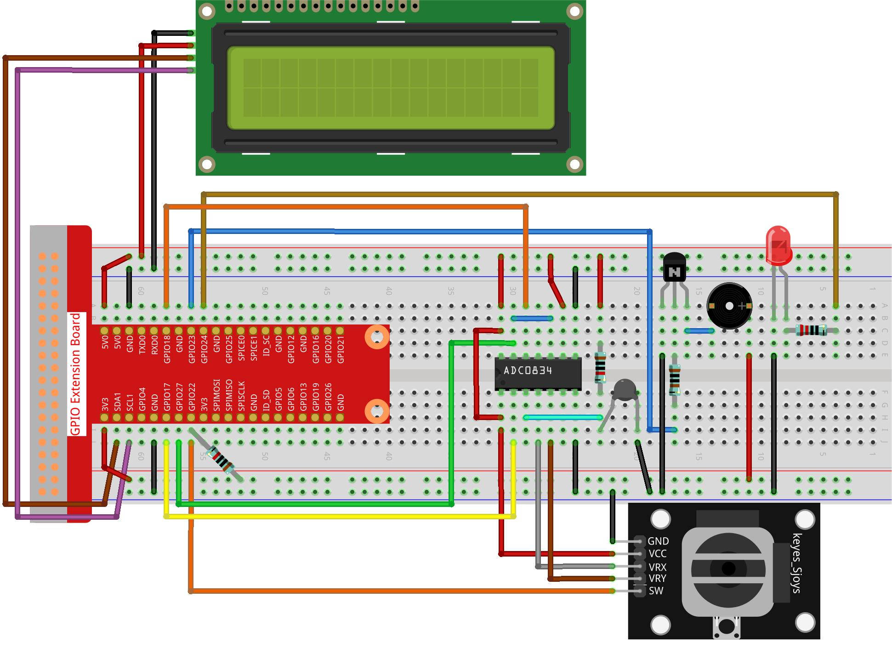

Nota
¡Hola! Bienvenido a la comunidad de entusiastas de SunFounder Raspberry Pi, Arduino y ESP32 en Facebook. Profundiza en el mundo de Raspberry Pi, Arduino y ESP32 junto a otros entusiastas.
¿Por qué unirse?
Soporte experto: Soluciona problemas posventa y desafíos técnicos con la ayuda de nuestra comunidad y equipo.
Aprende y Comparte: Intercambia consejos y tutoriales para mejorar tus habilidades.
Previsualizaciones exclusivas: Obtén acceso anticipado a anuncios de nuevos productos y adelantos exclusivos.
Descuentos especiales: Disfruta de descuentos exclusivos en nuestros productos más recientes.
Promociones y sorteos festivos: Participa en sorteos y promociones especiales de temporada.
üëâ ¬øListo para explorar y crear con nosotros? Haz clic en [Aqu√≠] y únete hoy mismo.
3.1.8 Monitor de Sobrecalentamiento
Introducción
Quizás quieras crear un dispositivo de monitoreo de sobrecalentamiento que pueda aplicarse en diversas situaciones, por ejemplo, en una fábrica, si necesitamos una alarma y el apagado automático de la máquina en caso de sobrecalentamiento en el circuito. En este proyecto, usaremos un termistor, un joystick, un zumbador, un LED y una pantalla LCD para hacer un dispositivo de monitoreo de temperatura inteligente, cuyo umbral es ajustable.
Componentes Necesarios
En este proyecto, necesitamos los siguientes componentes.

Diagrama Esquemático
T-Board Name |
physical |
wiringPi |
BCM |
GPIO17 |
Pin 11 |
0 |
17 |
GPIO18 |
Pin 12 |
1 |
18 |
GPIO27 |
Pin 13 |
2 |
27 |
GPIO22 |
Pin15 |
3 |
22 |
GPIO23 |
Pin16 |
4 |
23 |
GPIO24 |
Pin18 |
5 |
24 |
SDA1 |
Pin 3 |
||
SCL1 |
Pin 5 |

Procedimientos Experimentales
Paso 1: Monta el circuito.
Paso 2: Dirígete a la carpeta del código.
cd ~/davinci-kit-for-raspberry-pi/python-pi5
Paso 3: Ejecuta el archivo ejecutable.
sudo python3 3.1.8_OverheatMonitor.py
Al ejecutar el código, la temperatura actual y el umbral de alta temperatura 40 se muestran en la I2C LCD1602. Si la temperatura actual es mayor que el umbral, el zumbador y el LED se activan para advertirte.
Joystick aquí se utiliza para ajustar el umbral de alta temperatura. Moviendo el Joystick en la dirección de los ejes X y Y, puedes aumentar o disminuir el umbral actual de alta temperatura. Presiona el Joystick nuevamente para restablecer el umbral al valor inicial.
Nota
Si obtienes el error
FileNotFoundError: [Errno 2] No such file or directory: '/dev/i2c-1', necesitas consultar Configuración de I2C para habilitar el I2C.Si obtienes el error
ModuleNotFoundError: No module named 'smbus2', ejecutasudo pip3 install smbus2.Si aparece el error
OSError: [Errno 121] Remote I/O error, significa que el módulo está mal conectado o está dañado.Si el código y el cableado están correctos, pero la pantalla LCD aún no muestra contenido, puedes ajustar el potenciómetro en la parte trasera para aumentar el contraste.
Advertencia
Si aparece un mensaje de error RuntimeError: Cannot determine SOC peripheral base address, consulta Si gpiozero no funciona.
Código
Nota
Puedes Modificar/Restablecer/Copiar/Ejecutar/Detener el código a continuación. Pero antes, debes ir a la ruta de origen del código como raphael-kit/python. Después de modificar el código, puedes ejecutarlo directamente para ver el efecto.
#!/usr/bin/env python3
import LCD1602
from gpiozero import LED, Buzzer, Button
import ADC0834
import time
import math
# Inicializar botón del joystick, zumbador y LED
Joy_BtnPin = Button(22)
buzzPin = Buzzer(23)
ledPin = LED(24)
# Configuración inicial del umbral de temperatura superior
upperTem = 40
# Configurar los módulos ADC y LCD
ADC0834.setup()
LCD1602.init(0x27, 1)
def get_joystick_value():
"""
Reads the joystick values and returns a change value based on the joystick's position.
"""
x_val = ADC0834.getResult(1)
y_val = ADC0834.getResult(2)
if x_val > 200:
return 1
elif x_val < 50:
return -1
elif y_val > 200:
return -10
elif y_val < 50:
return 10
else:
return 0
def upper_tem_setting():
"""
Adjusts and displays the upper temperature threshold on the LCD.
"""
global upperTem
LCD1602.write(0, 0, 'Upper Adjust: ')
change = int(get_joystick_value())
upperTem += change
strUpperTem = str(upperTem)
LCD1602.write(0, 1, strUpperTem)
LCD1602.write(len(strUpperTem), 1, ' ')
time.sleep(0.1)
def temperature():
"""
Reads the current temperature from the sensor and returns it in Celsius.
"""
analogVal = ADC0834.getResult()
Vr = 5 * float(analogVal) / 255
Rt = 10000 * Vr / (5 - Vr)
temp = 1 / (((math.log(Rt / 10000)) / 3950) + (1 / (273.15 + 25)))
Cel = temp - 273.15
return round(Cel, 2)
def monitoring_temp():
"""
Monitors and displays the current temperature and upper temperature threshold.
Activates buzzer and LED if the temperature exceeds the upper limit.
"""
global upperTem
Cel = temperature()
LCD1602.write(0, 0, 'Temp: ')
LCD1602.write(0, 1, 'Upper: ')
LCD1602.write(6, 0, str(Cel))
LCD1602.write(7, 1, str(upperTem))
time.sleep(0.1)
if Cel >= upperTem:
buzzPin.on()
ledPin.on()
else:
buzzPin.off()
ledPin.off()
# Bucle principal de ejecución
try:
lastState = 1
stage = 0
while True:
currentState = Joy_BtnPin.value
# Alterna entre el modo de configuración y el de monitoreo
if currentState == 1 and lastState == 0:
stage = (stage + 1) % 2
time.sleep(0.1)
LCD1602.clear()
lastState = currentState
if stage == 1:
upper_tem_setting()
else:
monitoring_temp()
except KeyboardInterrupt:
# Limpia y sale
LCD1602.clear()
ADC0834.destroy()
Explicación del Código
Esta sección importa las bibliotecas necesarias para el proyecto.
LCD1602es para la pantalla LCD,gpiozeroproporciona clases para el LED, el zumbador y el botón,ADC0834se usa para la conversión de analógico a digital, ytimeymathson bibliotecas estándar de Python para funciones relacionadas con el tiempo y operaciones matemáticas, respectivamente.#!/usr/bin/env python3 import LCD1602 from gpiozero import LED, Buzzer, Button import ADC0834 import time import math
Aquí, se inicializan el botón del joystick, el zumbador y el LED.
Button(22)crea un objeto de botón conectado al pin GPIO 22.Buzzer(23)yLED(24)inicializan el zumbador y el LED en los pines GPIO 23 y 24, respectivamente.# Inicializar botón del joystick, zumbador y LED Joy_BtnPin = Button(22) buzzPin = Buzzer(23) ledPin = LED(24)
Establece el límite inicial de temperatura superior e inicializa los módulos ADC y LCD. La LCD se inicializa con una dirección (
0x27) y un modo (1).# Configurar umbral inicial de temperatura superior upperTem = 40 # Configurar módulos ADC y LCD ADC0834.setup() LCD1602.init(0x27, 1)
Esta función lee los valores X e Y del joystick utilizando el ADC0834. Devuelve un valor de cambio basado en la posición del joystick, que se usará para ajustar el umbral de temperatura.
def get_joystick_value(): """ Reads the joystick values and returns a change value based on the joystick's position. """ x_val = ADC0834.getResult(1) y_val = ADC0834.getResult(2) if x_val > 200: return 1 elif x_val < 50: return -1 elif y_val > 200: return -10 elif y_val < 50: return 10 else: return 0
Ajusta el límite superior de temperatura utilizando la entrada del joystick. El nuevo límite se muestra en la pantalla LCD.
def upper_tem_setting(): """ Adjusts and displays the upper temperature threshold on the LCD. """ global upperTem LCD1602.write(0, 0, 'Upper Adjust: ') change = int(get_joystick_value()) upperTem += change strUpperTem = str(upperTem) LCD1602.write(0, 1, strUpperTem) LCD1602.write(len(strUpperTem), 1, ' ') time.sleep(0.1)
Lee la temperatura actual del sensor utilizando el ADC0834 y la convierte a grados Celsius.
def temperature(): """ Reads the current temperature from the sensor and returns it in Celsius. """ analogVal = ADC0834.getResult() Vr = 5 * float(analogVal) / 255 Rt = 10000 * Vr / (5 - Vr) temp = 1 / (((math.log(Rt / 10000)) / 3950) + (1 / (273.15 + 25))) Cel = temp - 273.15 return round(Cel, 2)
Monitorea y muestra la temperatura actual y el límite superior. Si la temperatura supera el límite, se activan el zumbador y el LED.
def monitoring_temp(): """ Monitors and displays the current temperature and upper temperature threshold. Activates buzzer and LED if the temperature exceeds the upper limit. """ global upperTem Cel = temperature() LCD1602.write(0, 0, 'Temp: ') LCD1602.write(0, 1, 'Upper: ') LCD1602.write(6, 0, str(Cel)) LCD1602.write(7, 1, str(upperTem)) time.sleep(0.1) if Cel >= upperTem: buzzPin.on() ledPin.on() else: buzzPin.off() ledPin.off()
El bucle principal de ejecución alterna entre los modos de configuración y monitoreo según las pulsaciones del botón del joystick. Continúa actualizando el ajuste de temperatura o monitoreando la temperatura actual.
# Bucle principal de ejecución try: lastState = 1 stage = 0 while True: currentState = Joy_BtnPin.value # Alternar entre el modo de configuración y el de monitoreo if currentState == 1 and lastState == 0: stage = (stage + 1) % 2 time.sleep(0.1) LCD1602.clear() lastState = currentState if stage == 1: upper_tem_setting() else: monitoring_temp()
Esta sección asegura la limpieza y liberación de recursos cuando se interrumpe el programa.
except KeyboardInterrupt: # Limpiar y salir LCD1602.clear() ADC0834.destroy()